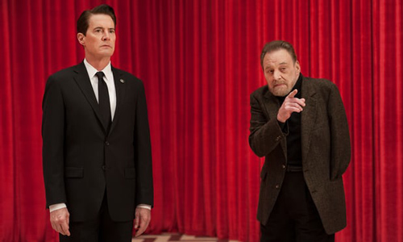
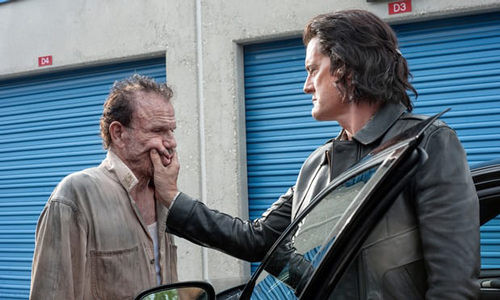
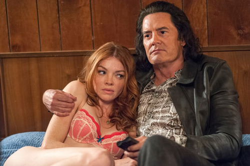
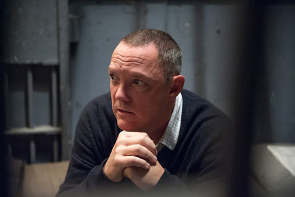
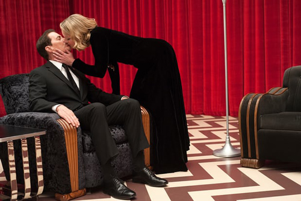
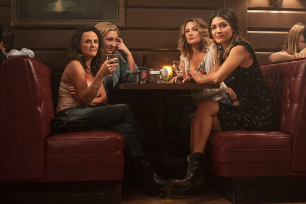

Twin Peaks recap: episodes one and two – crazy town just got much, much weirder
A quarter of a century on, David Lynch’s show is still baffling, mystical and occasionally deranged … only now there’s a new crime to solve. Forget Laura Palmer – who killed Ruth Davenport?

Trapped in a velour purgatory … Twin Peaks.
There’s something horrible in Ruth Davenport’s bed. The severed head, which has been shot through one eye, is hers. But the torso below, the cops discover when they pull back the covers, belongs to someone else. Who decapitated her? Who put this grisly assemblage of body parts in her bed? And why are school principal William Hastings’ fingerprints all over this room in Buckhorn, South Dakota?
Dave Macklay, Buckhorn PD’s leading detective, already looks out of his depth. Dave, baby, having watched two hours of this drama, I know the feeling.
Twin Peaks is back after a quarter of a century. It’s so teeming with baffling violence, dream logic, talking trees, mystical apparitions and dead characters that say gnomic stuff like: “Remember 430! Richard and Linda!” that I am totally banjaxed. True, I had that feeling towards the end of Twin Peaks’ first run when a character, for reasons I’ve never really got hold of, was trapped in a doorknob.
To be fair, Twin Peaks wasn’t always so confusing. When it first hit our screens in 1990, David Lynch and Mark Frost’s drama seemed to be a straightforward murder mystery in which FBI Special Agent Dale Cooper came to the north-western lumber town of Twin Peaks to investigate the murder of prom queen Laura Palmer. Cooper was initially an upbeat guy of simple tastes, fond of cherry pie and damn fine coffee. What’s more, the local populace included lots of gorgeous teens and daffy locals who, along with the fetching footage of this part of the world and Angelo Badalamenti’s seductively treacly score, ensured that Twin Peaks proved diverting.
The drama soon curdled, though, becoming more surreal, cutting between the eponymous logging town and the Black Lodge, a mystic netherworld or dreamscape where the dead, apparently, communed with the living and where Cooper spent much of his time receiving gnomic messages from oddballs who sounded as though they spoke English as a third language. Twin Peaks exchanged inscrutable hokum for the charm of a murder mystery set in small-town USA. That’s when, dear reader, many checked out. When I just checked back in, half a lifetime later, I found out that Twin Peaks has got even weirder.
Agent Cooper, we hardly recognised you.
 If this is how federal agents carry on these days, no wonder President Trump felt it necessary to fire FBI director James Comey … Evil Agent Cooper.
In an early scene, Kyle MacLachlan’s Agent Cooper arrives at some ne’er-do-well’s lodge. “Lookie here!” exclaims lead ne’er-do-well Otis, who’s hackneyed enough to be sipping moonshine from a jar, as Cooper makes a violent entrance. Cooper has long hair, snakeskin shirt, leather jacket – and all kinds of attitude. He’s also got the kind of leathery tan you don’t normally acquire at such a northerly latitude.
What’s happened, as fans of the original will remember, is that Cooper has been possessed by the demon spirit Bob, who was Laura’s murderer. If this is how federal agents carry on these days, no wonder President Trump felt it necessary to fire FBI director James Comey.
Cooper summons two of the lodge’s less grizzled denizens, Ray and Darya, to join him. They seem to be his accomplices in some mysterious project, possibly to do with the murder of Ruth Davenport.
Only in episode two do we find out what this unpleasantly reptilian Cooper is up to. He arrives at a motel room for a tryst with Darya, who is extended coquettishly on the bed in pink undies. (The sexual politics of Twin Peaks, and this scene in particular, don’t bear an instant’s scrutiny.) She’s just got off the phone with Ray, who is now in jail for taking illicit guns across state lines, but lies to Cooper, telling him she was on the phone to someone called Jack. Cooper catches her in the lie: she couldn’t have been talking to Jack. Why? Because two hours ago, Cooper murdered him.
 The sexual politics of Twin Peaks don’t bear an instant’s scrutiny … Evil Cooper arrives at a motel to meet Darya, who is lying coquettishly on the bed in pink undies.
To make matters worse for Darya, Cooper plays back her conversation with Ray on his recording device: “I got another call from Jeffries,” says Ray to Darya. “You have to hit Cooper if he’s still around tomorrow night.” Sobbing, she tells Cooper she and Ray were going to split half a million dollars for killing him.
Unsurprisingly, Cooper tells Darya, he is going to kill her. But not before he asks her a question. “Did Ray get that information from Hastings’ secretary?” Darya can give him no information about this, but the fact that Cooper is asking about Hastings’ secretary suggests he’s embroiled in the investigation into Ruth Davenport’s murder, given that Hastings is in the slammer as the lead suspect.
Then he produces a playing card from his jacket and shows it to Darya. It’s a black ace – but instead of a club or a spade, it depicts a blob with rabbit ears. “This is what I want,” evil Cooper tells Darya improbably. Of course it is. Why would he want that? Reader, do I look like Dale Cooper’s shrink? Then he puts a pillow over Darya’s face and shoots her.
Next, he phones New York while Darya lies dead on the bed. “Phillip?” he asks. He’s on the phone to someone called Phillip Jeffries (no relation) who seems to be the guy who hired Ray and Darya to kill him.
Next, he goes on the road. Most likely, he’s driving to the federal prison where Ray is incarcerated, to ask him some searching questions about Ray’s involvement in the plot to kill him.
Meanwhile in New York …
The hunky student’s job seems to echo the experience of watching Twin Peaks – nothing very much happens for minutes at a time.
A hunky student hoping to earn some money is sitting on a sofa. In front of him is a huge glass vitrine surrounded by cameras that are filming inside the empty box. The vitrine is fixed to the wall, and in the wall there is a circular hole into the New York night beyond.
What is this all about? Apparently, the student explains to Tracy who shows up one night with two lattes and hopes of seducing him, an anonymous billionaire has paid him to sit and stare at this empty box. If anything materialises, it’s his job to report what he sees. So far, he’s seen nothing worth reporting.
In this, his job seems to echo the experience of watching Twin Peaks – nothing very much happens for minutes at a time – an effect that, as the boy who cried wolf discovered, has diminishing returns. Understandably, our student seeks distraction. “Wanna make out?” he asks Tracy. “What do you think?” she says, gamely.
While they get it on, let me add this. That mystery billionaire is probably the Phillip Jeffries to whom Cooper was speaking earlier. Us Jeffrieses are bad to the bone.
Out of the corner of his eye, though, our loved-up student glimpses a naked figure flickering in the box. He and Tracy look in mounting horror at the apparition and she screams. Suddenly, the glass explodes and the couple is covered in blood. Is it their blood? Or someone else’s? Stop looking at me as if I’d know.
Forget about who killed Laura Palmer – who killed Ruth Davenport?
 I’d be more convinced of Bill’s innocence were he not played by Matthew Lillard, best known as Stu Macher, one of the ghost-faced killers in the Scream horror franchise.
Detective Dave arrests his old high-school buddy William Hastings. (Small-town law enforcement must involve many such difficult moments.) But, Bill tells his wife Phyllis when she visits him in his cell, he was never in Ruth’s apartment – at least in reality. “I had a dream that I was in her apartment,” he adds. This prompts Phyllis to lose her conjugal felicity: “You fucking bastard. I have know about this affair all along!” “Now you lookie here,” Bill retorts, “I know about you and George and maybe somebody else too.” George is the family lawyer and, if Phyllis is carrying on with him, it doesn’t look too good for Bill beating the murder rap. Or as Phyllis puts it gleefully: “You’re going down! Life in prison Bill! Life in prison!” She leaves the cell grinning and walks into George’s arms. If I were Bill Hastings, I’d get a new lawyer.
Did Bill murder Ruth, and if so why? I’d be more convinced of his innocence were Bill not played by Matthew Lillard, best known as Stu Macher, one of the ghost-faced killers in the Scream horror franchise. Plus, the cops have just found something that looks like a body part in the trunk of Bill’s Volvo.
Worst of all, in one of those chillingly surreal moments that makes me forgive Lynch and Frost all the previous inscrutable longueurs, the camera tracks from Bill’s cell to the next. In it, an unearthly black-and-white figure is sitting on the bed with leering eyes straight from Willem de Kooning’s scary playbook. Its head floats off towards the ceiling. Finally I got something I’d wanted for 100-plus minutes – namely, the chills.
Talking trees, dead people talking and other strange stuff.
 Good Cooper with Laura Palmer in the red-curtained waiting room of the Black Lodge.
Much of the opening two hours takes place in the red-curtained waiting room of the Black Lodge, in which, unless I’m wrong, the good Cooper’s soul resides in some sort of velour purgatory. It is there that we reacquaint ourselves with the good Cooper, dressed in his former FBI uniform – suit, tie, enviable head of hair, only a few more worry lines than when MacLachlan last played this role – while his leathery evil doppelganger roamed South Dakota.
It is there that Cooper encountered several weird apparitions: a man with one arm and a glass eye, Laura Palmer, Laura Palmer’s father Leland and a leafless tree with what looks like a talking bag stuck in its branches.
There is a problem filming scenes like these that seem to have sprung from someone else’s unconscious, though: they are as vexing to experience as some stranger on a bus narrating you their long and complicated dream. And yet each of these apparitions gives up clues that, if so minded, Cooper might follow. For instance, thus spake the tree: “253! Time and time again! Bob! Go now!” What this means will only be solved in later episodes.
After roaming these velour ante-rooms for many minutes, the floor erupted and the next thing we know the good Cooper, suited and booted, is falling fast towards Manhattan. He manages to fly in through a hole in the wall into the glass vitrine our student had been monitoring. Once there, he looks out to see if the student and Tracy were dead or still making out. Instead, they’re gone, leaving not a trace. Missing them already.
A roadhouse named after gunshot – only in America.
 It’s nice to see some of the old gang again.
At the end of episode two, Lynch and Frost allow themselves and old fans a bittersweet trip down memory lane. Like many of the scenes featuring some of the 40 actors cast in their old roles, it doesn’t appear to have much to do with the drama (such as it is), but it’s nice to see some of the old gang again.
The camera frames the sign for the Bang Bang Bar, depicting a revolver firing bullets. Then we enter a scene echoing one at the end of the premiere episode in 1990. On stage the Chromatics are playing a wistful, white indie ballad of the kind I hoped we’d heard the last of in 1993. Below, Shelly Johnson and James Hurley, played by Mädchen Amick and James Marshall, are having drinks with friends.
27 years ago Shelly and James were among the jeunesse dorée of this hokey little burg. Now they are middle aged, she red-faced with booze and he bald thanks to the march of time. Shelly checks James out across the crowded room. “James is still cool,” she tells her drinking buddies. “He’s always been cool.”
The new Twin Peaks is like James, but with a twist. It was cool, 27 years ago. Now? It’s confusing, gnomic, occasionally deranging, beautifully shot, and, like the talking tree-bag, full of something. But cool? Not so much.
|